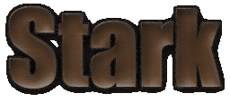

[ news | info | play | downloads | message board | links ]
Info:
Stark is a java 2.5d graphics engine by Markus
Persson.
You need Java 2,
Standard Edition version 1.4 or higher to run this applet.
About the only thing Stark can display now are Doom levels, read straight from the WAD
files. Almost
all levels render perfectly in Stark, with the exception of the sky in Doom2 levels. (Stark
is hardcoded to use "F_SKY1")
This applet uses the WAD file from the (free) shareware version of Doom 1. It has been
compressed as a .ZIP file for faster
loading, and can be downloaded here.
Known bugs:
- Sprites are implemented in the engine, but not included in the doom-rendering. This will be
added.
- Right now, Stark is very hardcoded at rendering Doom levels. This will be changed, so the
Doom-
rendering is a plugin to Stark.
- Sound is coming. Honest.
- "Lower unpegged" doesn't work properly.
The "DOOM1.WAD" file is copyright id
software.
Everything else is copyright Markus
Persson.
All rights reserved.
|